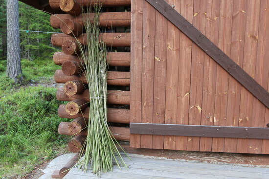
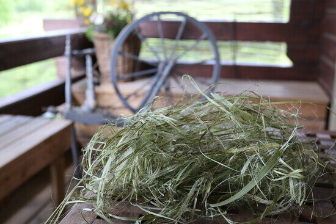

The steps for processing nettle for textiles are similar to processing flax. The key is softening the nettle’s woody stalks in order to be able to extract the fibers within.
1. collect nettles and remove the leaves
2. soak the nettle stalks (a process called retting) for at least one week to break down the cellulose surrounding the fibers so the fibers can be extracted
3. dry the nettles out in the sun, in a greenhouse or a sauna
4. break the dried-up stalks by hand to separate the fine fibers from the woody pith
5. scutch and hackle to further soften the fibers
6. spin the fibers into yarn
The only stings I got in this process were during the initial harvesting. Once the nettle stalks have been soaked and dried, the stinging hairs are gone. The fibers themselves are beautiful — light linen-colored, and very soft and strong.
Harvesting
Harvest from August onwards, when the plants have reached their optimal height but have not yet begun to die down. Cut the stalks near the ground with pruning shears and remove the leaves. For this stage, you do want to wear gloves and long sleeves! The leaves make excellent compost.
Retting
Retting the nettle stalks can be done in a few different ways. As with flax or hemp, nettle stalks could simply be laid on the ground for a couple of weeks. The morning dew and the soil microbes will break down the woody plant matter and dissolve the pectin and the lignin that make the fibers stiff and bind them to the stalk.
The process can be expedited by soaking the nettles in any large enough vessel such as a wheelbarrow, a kiddie pool, or livestock water tank. I soaked mine the way flax is traditionally retted in Finland: in a lake, weighed down by pieces of wood and held in place by the tall sedges.
When the plant matter starts to have that earthy smell of plant matter breaking down, i.e. rotting, it is time to remove them. This will take about a week.
Dry the Stalks
The next step is to dry the stalks completely. This can be done in the sun, in a greenhouse, or in a sauna if you have access to one.

Break the Dried-Up Stalks
At this point, the dried-up stalks will snap easily, and you should be able to extract the fibers from the woody stem. After some experimenting, you’ll discover the best way to separate the fibers from the pith. If you squeeze the stalk flat until it splits, you can then run a thumb nail to lengthen the crack all the way to the end. Then it’s easy to break a piece of the pith off and pull it away, extracting the fibers.
If working on a large scale, it would make sense to try the traditional equipment for processing flax, such as a scutching knife and a hackling board.
Carding or Hackling to Further Soften the Fibers
At the end of the extraction process, you’ll have a bundle of wispy fibers. Some green plant matter (cellulose) from the nettle stalks will probably still adhere to some of the fibers. Again, traditionally a hackling board was used to soften the fibers. I used my hand carders for wool, combing the silvery green mass until the remaining chaff was removed.

Spinning Nettle Fiber
The final step is spinning the nettle fibers into thread. You don’t need a spinning wheel; a drop spindle works fine as well.
The actual spinning of the nettle fibers is comparable to spinning flax: the fiber lacks the crimp of wool and is somewhat slippery as a result. However, nettle fiber can easily be blended with other natural fibers to make it easier.
Holding in your hands your first fibers harvested from the wild, from a plant that does not need any human input to thrive, is an empowering experience. If you’re a spinner or a weaver, there’s no end to the unique pieces you could create. Some people even say that the medicinal qualities of nettle are transferred to textiles created from them: a shawl woven out of nettle fiber, for example, will soothe aching necks and shoulders.